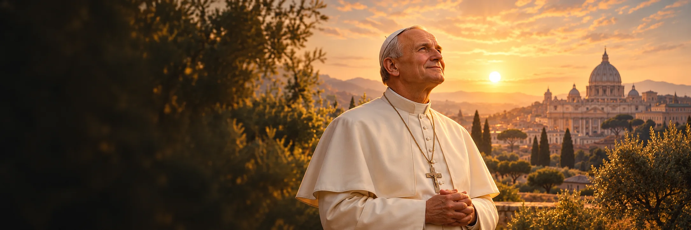

Odwaga
Nazwij jeden dobry krok, którego unikasz z obawy, i zacznij od najmniejszej części.

1920–2005
Wspomnienie liturgiczne: 22 października
Karol Wojtyła, papież od 1978 do 2005 roku. Jego posługa obejmowała liczne podróże, dialog i spotkania z młodymi.
Karol Wojtyła urodził się w Wadowicach w 1920 roku. Podczas okupacji pracował fizycznie i studiował w tajnym seminarium. Po święceniach był duszpasterzem, nauczycielem, biskupem i arcybiskupem Krakowa. W 1978 roku został papieżem Janem Pawłem II. Jego pontyfikat łączył podróże, spotkania z młodymi, rozbudowane nauczanie i widoczną obecność w sprawach świata. Po zamachu w 1981 roku spotkał się ze sprawcą i mu przebaczył. Zmarł w 2005 roku, kanonizowano go w 2014 roku. Ta historia obejmuje zarazem doświadczenie rodzinnych strat, życia pod okupacją, odpowiedzialności za Kościół i publicznego przeżywania choroby.
Poznaj historię jego życia →„Nie lękajcie się! Otwórzcie, otwórzcie na oścież drzwi Chrystusowi!”Św. Jan Paweł II, homilia inaugurująca pontyfikat, 22 października 1978Dosłowny krótki fragment oficjalnego polskiego tekstu Godziny czytań, który cytuje homilię z 1978 roku.
Karol Józef Wojtyła rodzi się 18 maja.
Rozpoczyna naukę w tajnym seminarium w czasie okupacji; 1 listopada 1946 roku przyjmuje święcenia.
Zostaje biskupem pomocniczym, a następnie arcybiskupem Krakowa.
16 października zostaje wybrany; 22 października inauguruje pontyfikat.
13 maja zostaje postrzelony na placu św. Piotra; później przebacza sprawcy.
Umiera 2 kwietnia 2005 roku. Papież Franciszek kanonizuje go 27 kwietnia 2014 roku.
 Artystyczny wizerunek świętego Jana Pawła II.
Artystyczny wizerunek świętego Jana Pawła II.Około 4 min czytania · 5 rozdziałów
Karol Józef Wojtyła urodził się 18 maja 1920 roku w Wadowicach. Był najmłodszym z trojga dzieci Karola Wojtyły i Emilii Kaczorowskiej. Matka zmarła, gdy miał dziewięć lat. Trzy lata później stracił starszego brata Edmunda, lekarza; ojciec zmarł w 1941 roku. Zanim rozpoczął posługę kapłańską, nie żyła już większość jego najbliższej rodziny.
Po maturze rozpoczął w 1938 roku studia na Uniwersytecie Jagiellońskim. Interesował się teatrem i literaturą. W 1939 roku okupanci niemieccy zamknęli uniwersytet. Wojtyła pracował w kamieniołomie, potem w zakładach chemicznych Solvay. Praca dawała mu utrzymanie i chroniła przed wywiezieniem do Niemiec. W tym samym okresie działał w konspiracyjnym Teatrze Rapsodycznym.
W 1942 roku Wojtyła rozpoczął naukę w tajnym seminarium duchownym prowadzonym przez arcybiskupa Adama Stefana Sapiehę. Łączył formację z pracą fizyczną w okupowanym Krakowie. Po wojnie kontynuował naukę w otwartym seminarium i na wydziale teologicznym. Święcenia kapłańskie otrzymał 1 listopada 1946 roku. Wkrótce potem wyjechał na studia do Rzymu, gdzie uzyskał doktorat z teologii.
Po studiach w Rzymie wrócił do Polski. Posługiwał najpierw w Niegowici, później w parafii św. Floriana w Krakowie; pracował także ze studentami. Rozwijał zainteresowania filozofią i teologią moralną, uczył w seminarium i środowisku akademickim. Te role pomagają zrozumieć późniejszego papieża: zanim przemawiał do tłumów na całym świecie, miał doświadczenie parafii, rozmów z młodymi i pracy intelektualnej. W jego biografii nie są to oddzielne wątki, lecz kolejne środowiska tej samej posługi.
Pius XII mianował Wojtyłę biskupem pomocniczym Krakowa w 1958 roku. W 1964 roku został arcybiskupem tego miasta, a trzy lata później kardynałem. Uczestniczył w Soborze Watykańskim II. Żył i działał w Polsce rządzonej przez władze komunistyczne, gdzie obecność Kościoła w przestrzeni publicznej była przedmiotem napięć. Jego zadania obejmowały zarządzanie diecezją, nauczanie i spotkania z wiernymi. Doświadczenie odpowiedzialności za lokalny Kościół poprzedziło więc wybór na urząd o światowym zasięgu.
16 października 1978 roku kardynałowie wybrali go papieżem. Przyjął imię Jan Paweł II. Pontyfikat rozpoczął uroczyście 22 października; właśnie tę datę Kościół wybrał później na jego wspomnienie liturgiczne. W homilii inauguracyjnej zachęcał do otwarcia drzwi Chrystusowi. Wybór papieża z Polski zwrócił uwagę świata, ale nowa funkcja oznaczała też zmianę skali odpowiedzialności: od wspólnoty krakowskiej do Kościoła obecnego w bardzo różnych krajach i kulturach.
Jan Paweł II odbył 104 podróże zagraniczne. Spotykał się z wiernymi na liturgiach, z przywódcami państw i przedstawicielami innych religii. Zapoczątkował regularne obchody Światowych Dni Młodzieży. Pozostawił obszerny zbiór encyklik, adhortacji, listów i przemówień. W jego nauczaniu powracały godność osoby, rodzina, wiara i odpowiedzialność za pokój. Wiele z tych tematów podejmował także podczas spotkań w kolejnych krajach.
13 maja 1981 roku został postrzelony na placu św. Piotra. Przeżył zamach i już podczas pobytu w szpitalu mówił o przebaczeniu sprawcy. W 1983 roku spotkał się z Mehmetem Alim Ağcą w więzieniu. Był to publiczny gest wobec człowieka, który go zranił, a zarazem wyraz nauczania o pojednaniu, do którego wielokrotnie wracał.
W ostatnich latach życia choroba coraz bardziej ograniczała Jana Pawła II. Jego słabość była widoczna podczas publicznych wystąpień, a w końcu utracił także możliwość swobodnego mówienia. Pozostawał na urzędzie, choć potrzebował coraz większej pomocy. Podczas pogrzebu kardynał Joseph Ratzinger przypomniał o cierpieniu papieża w ostatnich miesiącach posługi.
Jan Paweł II zmarł 2 kwietnia 2005 roku w Watykanie. Papież Franciszek kanonizował go 27 kwietnia 2014 roku. Wspomnienie 22 października odsyła do inauguracji pontyfikatu. Między Wadowicami, pracą w okupowanym Krakowie, posługą w Polsce i latami podróży jako papież zmieniały się warunki jego życia oraz skala odpowiedzialności. Ostatni okres przypomina, że jego posługa trwała również w czasie choroby.
Nazwij jeden dobry krok, którego unikasz z obawy, i zacznij od najmniejszej części.

Poświęć czas na uważne wysłuchanie kogoś z innym doświadczeniem.

Zastanów się, czy możesz dziś przerwać jedną drobną urazę.
Boże, przez wstawiennictwo świętego Jana Pawła II pomóż mi odważnie wybierać dobro. Naucz mnie słuchać innych i poświęcać czas modlitwie pośród codziennych obowiązków. Amen.
Modlitwa autorska W Modlitwie; nie jest cytatem ze świętego ani tekstem liturgicznym.Powierz swoją intencję →